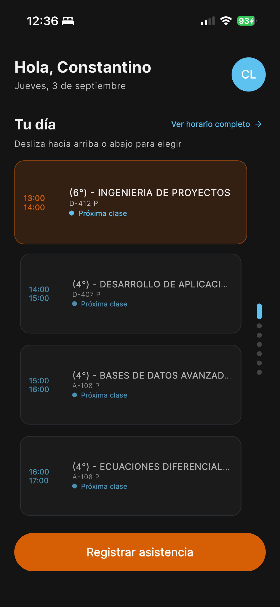

Inicia sesión
Entra con tu cuenta escolar. Tu horario y tus datos se cargarán automáticamente.
Soporte para alumnos
Consulta tus clases del día y confirma tu presencia desde el celular. Simple, rápido y pensado para acompañarte en cada clase.
Una propuesta de
CODIGO LATE S.A. DE C.V.

Comienza aquí
La aplicación te guía desde el primer acceso hasta la confirmación.
Entra con tu cuenta escolar. Tu horario y tus datos se cargarán automáticamente.
Permite Bluetooth y ubicación para confirmar que estás presente en el aula.
Cuando el docente inicie el pase de lista, toca el botón y espera la confirmación.
Soluciones rápidas
Estas revisiones resuelven la mayoría de los casos en menos de un minuto.
La asistencia no inicia
No aparece mi horario
Verifica tu conexión a internet, cierra la aplicación y vuelve a abrirla.
Cambié de celular
Tu cuenta protege el vínculo con tu dispositivo. Pide a coordinación que autorice el cambio.
Antes de pedir ayuda
Con esa información, el equipo responsable podrá identificar el caso con mayor rapidez. Nunca compartas tu contraseña.
Preguntas frecuentes
Lo esencial para usar Presencia con tranquilidad.
Bluetooth permite que la aplicación confirme la cercanía con el equipo del docente durante el pase de lista.
El permiso ayuda a validar que te encuentras en el aula. Debes mantenerlo habilitado mientras registras tu asistencia.
Permanece en el salón, verifica tus permisos y vuelve a intentarlo. Si el problema continúa, informa al docente antes de que termine la clase.
El cambio de dispositivo requiere autorización previa de coordinación para proteger la identidad de tu registro.
Presencia utiliza Bluetooth de baja energía y el permiso de ubicación para confirmar tu participación durante el pase de lista.